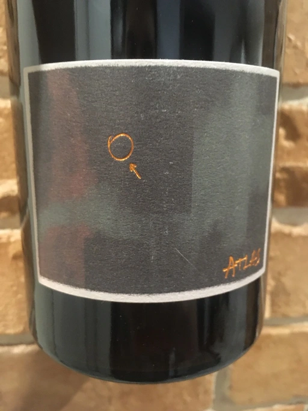

- Type
- Red Still, Dry
- Producer
- Bencze
- Vintage
- 2018
- Location
- Hungary, Balatonfelvidék OFJ
- Grapes
- Pinot Noir
- Alcohol
- 11.5
- Sugar
- 0.7
- Price
- 650 UAH
- Cellar
- N/A
Ratings
2020-04-13 - 6.50
Bitter herbs (thyme and wormwood), cranberry and sweat. Light body with crushing acidity. Should be good with food. While this wine has pleasant aroma, it lacks balance.